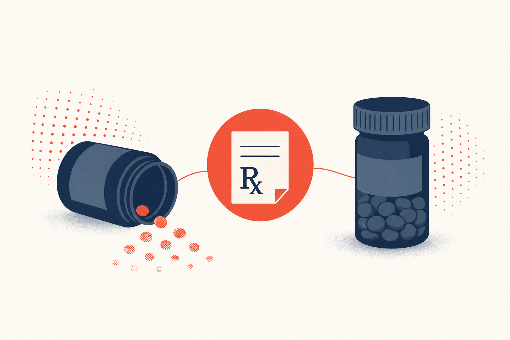

Key Takeaways
- Foreign prescriptions cannot be filled at US pharmacies. A US-licensed clinician must issue a new prescription; a same-day telehealth visit is usually the fastest path for chronic non-controlled medications.[1]
- Under the FDA Personal Importation Policy, foreign nationals may bring or ship a 90-day supply of drug products for personal use, and stays longer than 90 days can be topped up by mail with documentation.[2]
- Foreign visitors may bring up to 50 dosage units of controlled substances (per substance) into the US for personal use in the original labeled container, and must declare them to Customs and Border Protection.[3]
- DEA telemedicine flexibilities are extended through December 31, 2026, allowing DEA-registered US clinicians to prescribe Schedule II-V controlled medications via audio-video telemedicine without a prior in-person exam, subject to state law.[4] Individual telehealth companies often apply stricter internal rules.
- Bring a written medication list using generic (International Nonproprietary Name) drug names rather than foreign brand names. INN names are globally recognized; the CDC Yellow Book specifically recommends generic names because "trade names vary widely."[5][6]
- Cash-pay pricing for common generic prescriptions is often surprisingly low in the US. Generic amlodipine, lisinopril, metformin, levothyroxine, atorvastatin, and albuterol inhalers commonly run $4 to $30 for a 30-day supply with a GoodRx or similar discount.[7]

Running low on a chronic medication two-thirds of the way through a US trip is one of the most common reasons international visitors end up looking for a doctor. It is almost never an emergency, but it is genuinely disruptive: your foreign prescription cannot be filled at a US pharmacy, brand names are different, and the US healthcare system is unfamiliar. This guide is the practical, evidence-based version of what to do.
This satellite guide supplements our broader pillar guide on medical care for international visitors with a deeper focus on the single most common non-emergency reason visitors seek US care. If you are hosting a visiting parent with chronic conditions like hypertension, diabetes, or hypothyroidism, see our companion satellite, Chronic Conditions While Your Parents Visit the US. For visitors from India, see the country-specific companion guide, Medical Care in the US for Visitors From India. For visitors from Mexico, see Medical Care in the US for Visitors From Mexico. If you are hosting a visiting parent with chronic conditions like hypertension, diabetes, or hypothyroidism, see our companion satellite, Chronic Conditions While Your Parents Visit the US.
Why Your Foreign Prescription Cannot Be Filled at a US Pharmacy
A US pharmacy requires a prescription from a US-licensed clinician. This is not a paperwork technicality. It is federal and state law, and it protects both the patient and the pharmacy from dispensing an unapproved product or an incorrect dose. The FDA has been explicit on this point: "patients should not assume that prescription medications that are approved in one country are approved in another. Travelers coming into the U.S. should be aware that their products may be illegal here."[1]
Practically, this creates three separate issues for a visitor who runs low:
- The foreign clinician who wrote the original prescription is not licensed in the US and cannot legally prescribe here.
- The exact foreign brand may not exist in the US formulary, so the US clinician will substitute a US-approved equivalent by the generic (International Nonproprietary Name) name.
- Some foreign medications are simply not FDA-approved and cannot be prescribed in any form here.
The good news is that the vast majority of common chronic medications (blood pressure agents, thyroid hormone, oral diabetes drugs, most asthma inhalers, statins, oral contraceptives, most SSRIs) have well-established US equivalents and can be prescribed after a short telehealth visit.
The FDA 90-Day Personal Importation Rule for Foreign Nationals
This is a specific FDA policy that most visitors never hear about. Under the FDA Personal Importation Policy, foreign nationals visiting the US may bring or ship a 90-day supply of their personal medication into the US.[2] Direct quote from FDA: "The FDA will allow foreign nationals to bring or ship a 90-day supply of drug products," and "if the foreign national is staying longer than 90 days, they may have additional medication sent to them."[2]
Suggested documentation to travel or ship with, per FDA guidance:[2]
- A copy of the visa or passport
- A letter from the treating doctor at home
- A copy of the prescription in English
This is separate from the more restrictive rules that apply to US citizens importing drugs, and it explicitly recognizes that a visitor should not have to interrupt an established chronic regimen because they crossed a border.
Bringing Controlled Substances Into the US as a Visitor
Controlled substances follow a stricter set of rules governed by the DEA rather than the FDA. Per DEA guidance, foreign visitors may bring controlled substances into the US for personal use if all of the following are true:[3]
- The medication is in its original container.
- The label includes the drug's chemical or trade name and schedule symbol, or (if not) includes the pharmacy or practitioner information and a prescription number.
- The quantity does not exceed 50 dosage units per controlled substance for personal use.
- The medication is declared to Customs and Border Protection at entry.
Common examples of controlled substances (which have to follow this rule) include opioid pain medications, benzodiazepines (alprazolam, clonazepam, diazepam, lorazepam), ADHD stimulants (Adderall or its foreign amphetamine equivalents, methylphenidate), sleep medications like zolpidem, and testosterone. Additional state laws may apply and can be stricter than federal law.[3]
What is not allowed even for personal use: cannabis products remain federally illegal regardless of home-country legal status (except FDA-approved products or those with 0.3 percent THC or less on a dry weight basis, per TSA and CDC guidance), and certain amphetamine formulations sold outside the US are Schedule I or II here and cannot be brought in.[8]
What a US Telehealth Visit Can Bridge
For non-controlled chronic medications, a single physician-led US telehealth visit can typically produce a same-day US prescription for a 30-day bridge supply. The workflow is straightforward:
- Book a same-day video visit with a US-licensed physician-led telehealth service. Cash-pay pricing is typically $50 to $150.
- During the visit, share your written medication list (generic names, doses, frequency), your original bottles or blister packs, and a brief history of the underlying condition.
- The clinician confirms the diagnosis and the current regimen, checks for any red flags that would need in-person care, and sends a new US prescription electronically to a US pharmacy you choose.
- You pick it up. GoodRx and similar discount programs almost always produce lower cash-pay prices than paying full retail without a coupon.
Common chronic medications a US telehealth clinician can typically bridge for a stable visitor:
- Blood pressure medications: amlodipine, lisinopril, losartan, hydrochlorothiazide, metoprolol.
- Thyroid hormone: levothyroxine (the US market has multiple bioequivalent tablet formulations, per a 2019 PMC review by Chiavaroli and colleagues on levothyroxine formulations).[9]
- Oral diabetes drugs: metformin, sitagliptin, empagliflozin, glipizide.
- Asthma inhalers: albuterol rescue inhalers, common combination inhalers.
- Statins: atorvastatin, rosuvastatin, simvastatin.
- Oral contraceptive pills.
- Most SSRIs and SNRIs: sertraline, escitalopram, fluoxetine, venlafaxine, duloxetine (non-controlled).
- Common GI, allergy, and dermatology maintenance medications.
DEA Telemedicine Rules for Controlled Substances in 2026
This is the section that has changed most in the past three years, and it is worth reading carefully because there is a gap between what DEA rules allow and what individual telehealth companies actually offer.
On December 31, 2025, the DEA and HHS issued a fourth temporary extension of the COVID-19 telemedicine flexibilities for the prescription of controlled medications, extending them through December 31, 2026.[4] Under these flexibilities, DEA-registered practitioners are permitted to remotely prescribe Schedule II-V controlled medications via audio-video telemedicine encounters, and Schedule III-V narcotic controlled medications approved by the FDA for opioid use disorder treatment via audio-only telemedicine encounters, without having ever conducted an in-person medical evaluation, provided that the prescription complies with other DEA rules and applicable federal and state law.[4]
In practice, this means that a visitor who takes an ADHD stimulant, a benzodiazepine for anxiety, an opioid for chronic pain, or a sleep medication like zolpidem could in theory receive a bridge prescription from a US telehealth clinician in 2026. In practice, the picture is more complicated:
- State medical boards can impose stricter rules than DEA, including requiring an in-person visit or an established treatment relationship.
- Individual telehealth companies typically apply internal policies that are more restrictive than DEA rules. Many will not prescribe any Schedule II medications for a new-patient visitor with no US treatment relationship.
- Pharmacies may also decline to fill a controlled-substance prescription written by a distant clinician for a patient with no local address.
The realistic advice for a visitor on a controlled substance is: bring your existing supply, plan ahead using the 50-dosage-unit DEA personal-import rule for the length of your trip, and expect that if you run out unexpectedly, urgent care or an in-person walk-in clinic is more likely to help than telehealth.
Mapping Foreign Brand Names to US Equivalents
Brand names for the same active ingredient vary enormously by country. This is why the WHO maintains the International Nonproprietary Name (INN) system, which assigns a single globally recognized generic name to each active pharmaceutical ingredient.[5] Direct WHO quote: "Each INN is a unique name that is globally recognized and is public property."[5]
The CDC Yellow Book gives the same practical advice for travelers: "Include generic names of all medications because trade names vary widely. Standard dose regimens may vary by country."[6]
The table below lists common foreign brand names for common chronic-condition drugs and their US equivalents.
| Generic (INN) name | Class / use | Common foreign brand names | US brand or generic |
|---|---|---|---|
| Levothyroxine | Thyroid hormone | Eltroxin (UK, India), Euthyrox (EU), Thyrax (NL), L-Thyroxin (DE) | Synthroid, Levoxyl, Unithroid, or generic levothyroxine |
| Amlodipine | Blood pressure (calcium channel blocker) | Amlong (India), Istin (UK), Amlopin (EU), Norvasc (worldwide) | Norvasc or generic amlodipine |
| Metformin | Type 2 diabetes | Glucophage (worldwide), Diaformin (AU), Diabex (NZ), Formit (IN) | Glucophage or generic metformin |
| Atorvastatin | Cholesterol (statin) | Lipitor (worldwide), Atorlip (India), Sortis (DE), Tahor (FR) | Lipitor or generic atorvastatin |
| Losartan | Blood pressure (ARB) | Cozaar (worldwide), Losar (India), Lozap (EU), Losartan Krka (EU) | Cozaar or generic losartan |
| Sertraline | SSRI (depression, anxiety) | Zoloft (worldwide), Lustral (UK), Serlift (India), Gladem (DE) | Zoloft or generic sertraline |
| Albuterol (salbutamol INN) | Asthma rescue inhaler | Ventolin (worldwide), Asthalin (India), Salamol (UK) | ProAir, Ventolin, Proventil, or generic albuterol |
| Omeprazole | Acid reflux, ulcer | Losec (worldwide), Prilosec (US), Omez (India), Antra (DE) | Prilosec or generic omeprazole |
| Ramipril | Blood pressure (ACE inhibitor) | Tritace (UK/EU), Cardace (India), Delix (DE) | Altace or generic ramipril |
This is a partial list of representative examples. When in doubt, use the generic name, which any US pharmacist and clinician will recognize.
What to Bring to a US Telehealth or Urgent Care Visit
Preparing the visit in advance is what makes it a same-day success rather than a two-visit process.
Bring or have ready on your phone:
- A written medication list using generic (INN) names, with doses and frequency (for example, "amlodipine 5 mg once daily," not "one white pill morning").
- Original medication bottles or blister packs with legible labels, so the US clinician can confirm the exact formulation and manufacturer.
- A doctor's letter from home listing your diagnoses, allergies, blood type, and current medications. This is not strictly required for a routine bridge prescription, but it substantially shortens the visit and is invaluable if you end up needing more urgent care.
- Recent labs or vital measurements if you have them and they matter for the medication being refilled (for example, recent TSH for thyroid medication, recent A1c or fingerstick glucose for diabetes medications, recent INR for warfarin).
- The name and phone number of a US pharmacy you would like the prescription sent to. CVS, Walgreens, Rite Aid, Costco, and Walmart pharmacies are widely available and honor GoodRx discount cards.
What US Pharmacies Actually Cost Without Insurance
Generic prescription prices in the US are typically low and, with a discount program, often lower than uninsured prices in some other countries. A rough guide for 2026 cash-pay pricing at large discount retailers, based on GoodRx and similar programs:[7]
| Medication (generic) | Common use | Typical cash-pay with discount |
|---|---|---|
| Amlodipine 5 mg | High blood pressure | $4 to $15 |
| Lisinopril 10 mg | High blood pressure | $4 to $12 |
| Losartan 50 mg | High blood pressure | $5 to $15 |
| Metformin 500 mg | Type 2 diabetes | $4 to $15 |
| Levothyroxine 50 mcg | Hypothyroidism | $5 to $20 |
| Atorvastatin 20 mg | High cholesterol | $6 to $20 |
| Sertraline 50 mg | Depression, anxiety | $8 to $20 |
| Omeprazole 20 mg | Acid reflux | $8 to $20 |
| Albuterol HFA inhaler | Asthma rescue | $25 to $65 |
| Amoxicillin 500 mg (10 caps) | Antibiotic course | $8 to $18 |
Retail cash prices without a discount can be substantially higher. Brand-name inhalers, biologics, injectable diabetes medications, and specialty drugs can cost hundreds to thousands per fill; if you use one of these, plan the 90-day FDA personal-import route in advance.
A physician-led telehealth visit ($50 to $150) plus a common generic ($4 to $30) is often the cheapest and fastest path when a visitor needs a bridge script for a chronic non-controlled medication.
What US Telehealth Cannot Do for a Visitor
Telehealth is a great tool for chronic-medication continuity but it has real limits:
- Complex biologics requiring prior authorization (many rheumatology, oncology, and immunology drugs) generally cannot be turned around in a single visit.
- Warfarin bridging requires an INR check, so an urgent-care lab is usually part of the workflow.
- Insulin changes for type 1 or complex type 2 diabetes often need in-person or established-relationship care.
- Any medication not FDA-approved in the US (some traditional preparations, some combination cough syrups, some older amphetamine formulations, some non-US brands with unique formulations).
- Compounded, sustained-release, or specialty formulations may not have a direct US equivalent, so expect a substitution to the closest FDA-approved formulation.
When to Skip Telehealth and Go In Person
Bridge prescriptions are for stable visitors with no new symptoms. Go to urgent care or an ER instead if any of the following are true:
- New concerning symptoms tied to the underlying condition (chest pain, shortness of breath, focal weakness, severe abdominal pain, syncope, dehydration).
- Signs of an infection or acute illness (fever with confusion, severe cough with hypoxemia, severe pain).
- A significant change in a controlled chronic condition: uncontrolled blood glucose, severe hypertension, a fresh diabetic ketoacidosis prodrome.
- Pregnancy-related medication questions, which usually require in-person evaluation.
- Any pediatric prescription question when the child is unwell, especially for infants under three months with fever.
For a broader review of when to use each level of US care (911 vs ER vs urgent care vs telehealth vs retail clinic), see the parent guide, Medical Care for International Visitors.
Frequently Asked Questions
No. US pharmacies require a prescription from a US-licensed clinician. A same-day physician-led telehealth visit is usually the fastest way to obtain a new US prescription for a chronic non-controlled medication you already take.
Under the FDA Personal Importation Policy, foreign nationals may bring or ship a 90-day supply of their personal medication into the US. Visitors staying longer than 90 days may have additional medication sent to them. Suggested documentation includes a copy of your visa or passport, a doctor's letter, and a copy of the prescription in English.
Under DEA rules, foreign visitors may bring up to 50 dosage units per controlled substance for personal use, in the original labeled container that includes the drug name and schedule symbol (or pharmacy and prescription number). Declare all medications to Customs and Border Protection at entry. Cannabis products remain federally illegal in the US regardless of home-country legal status.
In principle yes: DEA telemedicine flexibilities extended through December 31, 2026 allow DEA-registered US clinicians to prescribe Schedule II-V controlled medications via audio-video telemedicine without a prior in-person visit. In practice, individual telehealth companies and state medical boards often impose stricter rules, and many will decline to prescribe controlled substances for a new-patient visitor. Plan on bringing your supply and using the DEA 50-dosage-unit personal-import rule.
The active ingredient (the generic or International Nonproprietary Name) is the same, but the brand name and the appearance of the pill may differ. This is because each country has its own brands. For example, levothyroxine sold as Eltroxin in the UK or India is dispensed as Synthroid, Levoxyl, Unithroid, or generic levothyroxine in the US. Ask your US clinician to write the prescription using the generic name.
For common generic prescriptions with a GoodRx or similar discount, cash-pay prices are typically $4 to $30 for a 30-day supply. Brand-name inhalers, biologics, and specialty drugs are substantially more expensive, so if you take one of these, plan the FDA 90-day supply strategy in advance.
A written medication list using generic (INN) names with doses and frequency, your original medication bottles or blister packs, and if possible a doctor's letter listing your diagnoses, allergies, and current regimen. Recent labs (TSH, A1c, INR, etc.) are helpful when relevant.
Yes, for personal-use quantities. The FDA Personal Importation Policy explicitly permits foreign nationals to have additional medication sent to them when staying longer than 90 days. Include a copy of your prescription in English, a doctor's letter, and evidence that the medication is for your personal use.
US urgent care clinics are open evenings and weekends and can typically write a bridge prescription for a stable visitor after a brief in-person evaluation. Retail clinics inside pharmacies (CVS MinuteClinic, Walgreens Health Clinic) can also refill some non-controlled prescriptions. Cash pricing at urgent care runs about 150 to 280 dollars in 2026.
References
- U.S. Food and Drug Administration. Traveling with Prescription Medications. FDA Drug Info Rounds. Available at https://www.fda.gov/drugs/fda-drug-info-rounds-video/traveling-prescription-medications.
- U.S. Food and Drug Administration. Personal Importation. Available at https://www.fda.gov/industry/import-basics/personal-importation.
- U.S. Drug Enforcement Administration. Traveling to the U.S. with Medication. Available at https://www.dea.gov/sites/default/files/2026-05/Traveling%20With%20Medication_5.pdf.
- U.S. Drug Enforcement Administration. DEA Extends Telemedicine Flexibilities to Ensure Continued Access to Care. December 31, 2025. Available at https://www.dea.gov/press-releases/2025/12/31/dea-extends-telemedicine-flexibilities-ensure-continued-access-care.
- World Health Organization. International Nonproprietary Names (INN). Available at https://www.who.int/teams/health-product-and-policy-standards/inn.
- Hagmann SHF, Norton SA. What To Do When Sick Abroad. CDC Yellow Book, 2026 edition. NCBI Bookshelf. Available at https://www.ncbi.nlm.nih.gov/books/NBK620917/.
- GoodRx. Prescription Prices and Coupons. Available at https://www.goodrx.com/.
- Centers for Disease Control and Prevention. CDC Yellow Book 2026: Traveling with Prohibited or Restricted Medications. Available at https://www.cdc.gov/yellow-book/hcp/travelers-with-additional-considerations/traveling-with-prohibited-or-restricted-medications.html.
- Chiavaroli V, Mercuri S, Bonfante D, et al. Levothyroxine Formulations: Pharmacological and Clinical Implications of Generic Substitution. PMC review. Available at https://pmc.ncbi.nlm.nih.gov/articles/PMC6822816/.